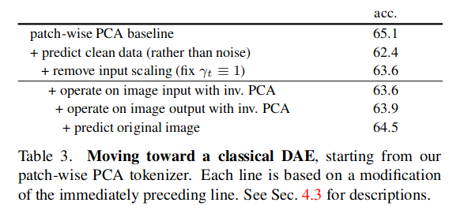

Abstract
这篇文章分析了 Denoising Diffusion Models(DDM) 在图像领域的表示能力。通过不断解构DDM，从而分析Transformer的性能。最终得出结论：仅仅有很少的几个参数是有用的，对最后的图像生成起到关键作用。
这点和全连接神经网络十分相似，当层数过多的时候，只有输入层附近的几层与输出层附近的几层是关键的，中间几层处于液化状态（可以随意选取，不会影响最终的结果）。
现有的预训练DDM在生成任务上表现十分优异，然而留下一个开放问题：这些用于生成任务的预训练模型，其是否同样获得表征能力。
Deconstructing Denoising Diffusion Models
作者发现主要的关键因素是tokenizer，其表现了低维的潜空间。但是不难发现，潜变量并不是tokenizer独有的，standard VAE, a patch-wise VAE, a patch-wise AE, and a patch-wise PCA encoder 均有潜变量。
解构的路线分为三个步骤： * 首先将Diffusion Transformer(DiT)架构，变为自监督模型 * 逐步拆解toenizer * 尽可能尝试还原模型，将其变为一个经典的Denoising Autoencoder(DAE)
Reorienting DDM for Self-supervised Learning
DDM的概念本质上是从DAE的概念上生成的，依旧是用于图像生成，一些设计并不适合自监督学习，一些是并不必要的（例如提升图像生成质量）。
Remove class-conditioning 标签在图像生成上很重要，但是不符合自监督学习的要求，因此移除标签。此举使得准确性提升，但是图像质量（FID）下降。
Deconstruct VQGAN
Replace noise schedule 不需要逐步添加噪声，可以一步直接加入噪声
Deconstructing the Tokenizer
接下来解构tokenizer，将会用到下面四种自编码器，每一种自编码器都是前面一种的简化。
Convolutional VAE
损失函数如下： ∥x − g(f(x))∥2 + 𝕂𝕃[f(x) ∣ 𝒩] 其中f(⋅)是编码函数g(⋅)是解码函数，x是输入值，VAE是深度卷积神经网络。Patch-wise VAE
选用线性的函数作为编码解码器（全连接网络），损失函数设置如下： ∥x − UTVx∥2 + 𝕂𝕃[Vx ∣ 𝒩] U, V是矩阵。Patch-wise AE
进一步简化，删除正则化项： ∥x − UTVx∥2Patch-wise PCA
PCA 可以看成是一种特殊的 AE，损失函数为： ∥x − VTVx∥2
可以从上表中看出，表现性能都差不多，并且计算KL散度也不是很重要。甚至PCA工作的更好
Toward Classical Denoising Autoencoders
逐步减去 PCA-based DDM 与经典DAE之间的差距。 
Conclusion
从最后的实验结果看出，对潜变量空间加入噪音对结果的影响更大。因此说明对模型训练起关键作用的是少数几个参数。
应该是我没有读懂该文章的实验思路，在我的理解下，潜变量应该是浓缩了更多信息的空间，对其加噪音本来就会比对原像素空间其更大的影响。另一方面，这种论证方法，我并不认为十分研究，应该有更多的理论分析保证。